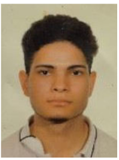

|

|
Ganes de treballar
y Capacitat de treball en equip |
- ESO - 2014-2019
- 2019 - 2022 Ciclo medio de Electromecánica de Vehículos industriales (E.V.I)
- 2024 – 2025 cursando D.A.W (Desarrollo de Aplicaciones Web)
|
- 2020-2022 Pràctiques i treballat en taller de camions Renault trucks Motor Tàrrega
- Auto Motor S.A
- Trecoop
- TALLERS Colomes.
|
- Polivalente
- Actitud positiva
- Responsabilitat
|